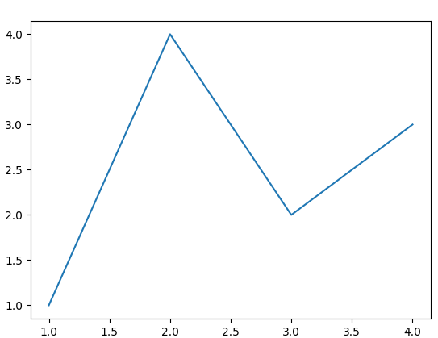

Python
What is Python?
Python is an interpreted, high-level and general-purpose programming language. Python's design philosophy emphasizes code readability with its notable use of significant whitespace. Its language constructs and object-oriented approach aim to help programmers write clear, logical code for small and large-scale projects.
Tutorials
Software Carpentry provides two good resources for Python:
and
Plotting and Programming in Python
Also, here are some Python coding cheat sheets:
Scripts vs. Modules
It's also important to know the difference between a Script and a Module:
Python Scripts and Modules
and
Code Reuse: Functions and Modules
A plain text .py file containing Python code that is intended to be directly executed by the user is usually called a script
A plain text .py file, which contains Python code that is designed to be imported and used from another Python file, is called a module
How to write a simple script:
Open a text file and save it as a filename with the suffix .py:
One good program to use for this is Sublime Text. Check it out.
Or better yet, Visual Studio Code
Or in terminal:
nano filename.py[note: nano is a built in text editor you can run from the command line. It's very handy]
At the top, it should say: #!/usr/bin/env python3
then your code. Here's an example:
#!/usr/bin/env python3
print('Hello World!')After, you will have to assign execution permissions to your file:
chmod +x filename.pyYou can run the script from the directory with './' before the filename:
./hello.pyYou can also store this file in a Script folder, which you can tell Python to search in for scripts:
export PATH="$PATH:/usr/local/bin/python"where /usr/local/bin/python is replaced with the path to the folder you want Python to look for your scripts
After you set the path, you don't need to be in the directory where your script is, and you don't need to include the './' before the script name. You can just type the script name from any directory and it will run it:
filename.pyHow to write a simple module:
Open a text file and write some simple code:
def greeting(name):
print("Hello, " + name)Save this file as something like mymodule.py
Place this file in one of the Python paths (see above about scripts)
To see what paths Python is searching, start a python environment and type:
import sys
sys.pathNow import the module in python:
import mymoduleThen run it:
mymodule.greeting("Jonathan")PIP
Pip is used to install python libraries and can be very useful. Here is a guide to installing PIP
Install / Upgrade Packages
pip install <package_name>pip install <package_name> --upgradeTroubleshooting
instead of pip, you might have to call it this way:
python3 -m pipLibraries to install
numpy
numpy is for numbers
import numpy as nppandas
pandas is for dataframes
import pandas as pdscipy
SciPy provides algorithms for optimization, integration, interpolation, eigenvalue problems, algebraic equations, differential equations, statistics and many other classes of problems.
matplotlib
Matplotlib is for visualizations
Example
import matplotlib.pyplot as plt
fig, ax = plt.subplots() # Create a figure containing a single Axes.
ax.plot([1, 2, 3, 4], [1, 4, 2, 3]) # Plot some data on the Axes.
plt.show() # Show the figure.
Transparent color
https://stackoverflow.com/questions/62453018/matplotlib-colourmap-from-transparent
plotly
Plotly’s Python graphing library makes interactive, publication-quality graphs.
jupyter
The Jupyter Notebook is the original web application for creating and sharing computational documents. It offers a simple, streamlined, document-centric experience.
pip install jupyter installs the Jupyter Notebook, JupyterLab, and the IPython Kernel
nilearn
Nilearn enables approachable and versatile analyses of brain volumes. It provides statistical and machine-learning tools, with instructive documentation & open community.
nibabel
Read and write access to common neuroimaging file formats, including: ANALYZE (plain, SPM99, SPM2 and later), GIFTI, NIfTI1, NIfTI2, CIFTI-2, MINC1, MINC2, AFNI BRIK/HEAD, ECAT and Philips PAR/REC. In addition, NiBabel also supports FreeSurfer’s MGH, geometry, annotation and morphometry files, and provides some limited support for DICOM.
NiBabel’s API gives full or selective access to header information (metadata), and image data is made available via NumPy arrays. For more information, see NiBabel’s documentation site and API reference.
import nibabel as nibseaborn
seaborn is a high level interface for drawing statistical graphics with Matplotlib. It aims to make visualization a central part of exploring and understanding complex datasets.
nibabel
Read and write access to common neuroimaging file formats
nipy
The aim of NIPY is to produce a platform-independent Python environment for the analysis of functional brain imaging data using an open development model.
Nipype
Nipype, an open-source, community-developed initiative under the umbrella of NiPy, is a Python project that provides a uniform interface to existing neuroimaging software and facilitates interaction between these packages within a single workflow. Nipype provides an environment that encourages interactive exploration of algorithms from different packages (e.g., SPM, FSL, FreeSurfer, AFNI, Slicer, ANTS), eases the design of workflows within and between packages, and reduces the learning curve necessary to use different packages.
Python Virtual Environment
Using poetry
Example
poetry init # press enter for defaults or make changes
poetry add numpy # libraries you want to useYou should now have a file called pyproject.toml that looks like this:
[tool.poetry]
name = "poetry"
version = "0.1.0"
description = ""
authors = [""]
[tool.poetry.dependencies]
python = "^3.8"
numpy = "^1.21.1"
[build-system]
requires = ["poetry-core>=1.0.0"]
build-backend = "poetry.core.masonry.api"If you get an error when trying to install a package that says something like:
The current project's supported Python range (>=3.10,<4.0) is not compatible with some of the required packages Python requirement:
- stochastic requires Python >=3.8,<3.11, so it will not be satisfied for Python >=3.11,<4.0
Because no versions of stochastic match >0.7.0,<0.8.0
and stochastic (0.7.0) requires Python >=3.8,<3.11, stochastic is forbidden.
So, because pythonncctoolbox depends on stochastic (^0.7.0), version solving failed.
- Check your dependencies Python requirement: The Python requirement can be specified via the
pythonormarkerspropertiesFor stochastic, a possible solution would be to set the `python` property to ">=3.10,<3.11"
Try editing the pyproject.toml file so it reads:
[tool.poetry.dependencies]
python = ">=3.10,<3.11"Now type
poetry updateThen try to install your package again:
poetry add stochasticJupyter
https://hippocampus-garden.com/jupyter_poetry_pipenv/
poetry add -D jupyter # libraries for development use onlynow just run
poetry run jupyter notebookUsing virtualenv
First make sure virtualenv is installed:
pip install virtualenvNext create a virtual environment
virtualenv .venv -p pythonwhere .venv is what I’ve called my virtual environment (and it will place it in the current directory I’m in); and -p python tells the computer which python to use (it will be whatever is which python
Now activate this environment:
source .venv/bin/activateNow when you type which python it should show your venv path
Also: which pip should do the same
To deactivate:
deactivateInclude in jupyter notebook:
python -m ipykernel install --user --name=yourvenvnameConda
More detailed info on conda
You may also want to look into using a package manager like anaconda or miniconda. When pip installs a package, it automatically installs any dependent Python packages without checking if these conflict with previously installed packages. It will install a package and any of its dependencies regardless of the state of the existing installation.
In contrast, conda analyses the current environment including everything currently installed, and, together with any version limitations specified, works out how to install a compatible set of dependencies, and shows a warning if this cannot be done.
Install
cd ~/Downloads
wget --quiet https://repo.anaconda.com/miniconda/Miniconda3-latest-Linux-x86_64.sh
bash Miniconda3-latest-Linux-x86_64.sh -b -p <dir>where <dir> is where you want to install (e.g. $HOME/miniconda3)
then
source <dir>/bin/activateUpdate
conda update conda -yConda Environments
- Using environments are highly recommended as a best practice for running scripts.
- Conda environments are easier set-up than pip environments
- Conda checks to makes sure all dependancies are met at all times, where as pip does not.
Example
conda create --name my-python38environment python=3.8To activate:
conda activate my-python38environmentTo deactivate:
conda deactivateBest practices
To list the conda environments:
conda info --envsTo install a specific package into a specific environment
conda install -n <env_name> <package>
e.g. conda install -n first_r_python_env numpySometimes you will have to specify a specific channel (similar idea to a repository) as not all packages are in the default conda channel.
Try to install from the default channel or 'channel-forge' (a community managed channel) as these are the best managed channels.
conda install -c conda-forge -n <env_name> <package>A list of the more common packages and where I found them.
- conda install -n <env_name> numpy
- conda install -n <env_name> pandas
- conda install -n <env_name> matplotlib
- conda install -n <env_name> seaborn
- conda install -c conda-forge -n <env_name> rpy2
- conda install -c conda-forge -n <env_name> statsmodels
- conda install -c conda-forge -n <env_name> nilearn
- conda install -c intel -n <env_name> scikit-learn
Your .conda directory may get very large if you install multiple packages and create many virtual Conda environments. Make sure to clean the Conda cache and clean unused packages with:
conda clean --allClean unused Conda environments by first listing the environments with:
conda env list, and then removing unused ones:
conda env remove --name <yourenvironmentname>You can build Conda environments in different locations to save space on your home directory. You can use the —prefix flag when building your environment. For example:
conda create myenv --prefix=/work/<mygroup>/<mydirectory>Troubleshooting
If you'd prefer that conda's base environment not be activated on startup, set the auto_activate_base parameter to false:
conda config --set auto_activate_base falseMRI with Python
Introduction to Working with MRI Data in Python: https://carpentries-incubator.github.io/SDC-BIDS-IntroMRI/aio/index.html
NiPype
NiPype stands for Neuroimaging in Pythong Pipelines and Interfaces (link)
FSL
FSL can be run from NiPype
import nipype.interfaces.fsl as fslHead here for documentation
Example:
from nipype.interfaces.fsl import Merge
merger = Merge()
merger.inputs.in_files = ['functional2.nii', 'functional3.nii']
merger.inputs.dimension = 't'
merger.inputs.output_type = 'NIFTI_GZ'
merger.cmdline
'fslmerge -t functional2_merged.nii.gz functional2.nii functional3.nii'
merger.inputs.tr = 2.25
merger.cmdline
'fslmerge -tr functional2_merged.nii.gz functional2.nii functional3.nii 2.25'Stats with Python
I found this video helpful: https://www.youtube.com/watch?v=wQ9wMv6y9qc
Curve and Surface fits
Adding a line or curve of best fit is a quick way of visualising the relationship between data.
We have to be mindful of the different ways of fitting data; you can underfit but also overfit.
Packages to import
import numpy as np
import pandas as pd
import matplotlib.pyplot as plt
import seaborn as sns
from scipy import stats
from scipy.optimize import curve_fit
import pickle
from scipy.stats import spearmanr
from scipy.stats import pearsonr
import matplotlib.animation as animation2d function fit
You can plot a straight line fit quite easily with modules such as seaborn, you can even fit data with higher order polynomials
But for custom control over the fitting function I have provided a basic example script.
NOTE: It will also produce a residual plot which is good visual way to check the 'goodness' of the fit.
def 2d_fit_residual(data, x_name, y_name):
"""
2d_fit_residual outputs a curve fitted plot of the input data points based on theoretical fitting function fit_function()
it also outputs a residual graph.
:data: np.array x,y data inputs expected to be in format [[x1, y1], [x2, y2], [x3, y3], ...]
:x_name: str x-axis variable name
:y_name: str y-axis variable name
:return: curve fitted plot and residual graph
"""
X = data[:,0]
Y = data[:,1]
######################################################################
# custom function. If you change the number of parameters, you will
# need to update the guesses variable and any calls to fit_function()
######################################################################
def fit_function(X_var, Y1, Y2, C):
return Y1*X_var**2 + Y2*X_var + C
######################################################################
# curve fit part
######################################################################
guesses = (1, 1, 1)
params, pcov = curve_fit(fit_function, X, Y, guesses, maxfev=10**8)
######################################################################
# data scatter graph plot
######################################################################
fig = plt.figure()
ax = plt.axes()
plt.title('{} vs. {}'.format(y_name, x_name))
plt.xlabel('{}'.format(x_name))
plt.ylabel('{}'.format(y_name))
ax.scatter(X, Y, c='green')
######################################################################
# correlation coefficients. Pearsons assumes linear, Spearmans does not
######################################################################
corr, _ = spearmanr(X, Y)
legs = 'Spearmans correlation: %.3f' % corr
# corrlin, _ = pearsonr(X, Y)
# legslin = 'Pearsons correlation: %.3f' % corr
######################################################################
# plot fit onto graph
######################################################################
xtheory = np.linspace(min(X), max(X), 10000)
z_theory = fit_function(xtheory, params[0], params[1], params[2])
ax.plot(xtheory, z_theory, label = legs)
ax.legend(loc = 'best')
plt.show()
######################################################################
# residual to check fit
######################################################################
y_theory = fit_function(np.array((X)), params[0], params[1], params[2])
y_diff = y_theory - Y
fig = plt.figure()
ax = plt.axes()
ax.scatter(X, y_diff, c='red', marker='x')
ax.plot(np.array((min(X), max(X))), np.array((0,0)))
plt.title('Residual graph of difference between model and data')
plt.xlabel('{}'.format(x_name))
plt.ylabel('Measureed - Theoretical {}'.format(y_name))
plt.show()The reason for the odd input data numpy shape is because of pandas data frames. To create a numpy array for this function from your data frame
2d_fit_input = df[['x_var', 'y_var']].to_numpy()3d function fit
def scatter_3d(data, Z, x_name, y_name, z_name):
"""
scatter_3d outputs a 3d surface fitted plot of the input data points based
on theoretical fitting function fit_function()
Will also retrun a pickle of the 3d plot in the directory you run this
script from.
:data: np.array x,y data inputs expected to be in format [[x1, y1], [x2, y2], [x3, y3], ...]
:Z: np.array z data inputs expected to be in format [z1, z2, z3, ...]
:x_name: str x-axis variable name
:y_name: str y-axis variable name
:z_name: str z-axis variable name
:return: surface fitted plot and a pickle of the surface fitted plot
"""
X = data[:,0]
Y = data[:,1]
def fit_function(data, X1, X2, X3, Y1, Y2, Y3, XY, C1, C2):
x = data[:,0]
y = data[:,1]
return -np.sqrt(X2*x + Y2*y + C1) + np.sqrt(X2*x + Y2*y + C1-(X1*x**2 + Y1*y**2 + XY*x*y + X3*x + Y3*y + C2))
######################################################################
# curve fit part
######################################################################
guesses = (-0.5, 100, 100, -0.5, 1, 1, 0.0001, 100, -100)
params, pcov = curve_fit(fit_function, data, Z, guesses, maxfev=10**8)
print('Params = {}'.format(params))
######################################################################
# 3d scatter graph plot
######################################################################
fig = plt.figure()
ax = plt.axes(projection = '3d')
ax.set_title('{} vs. {} vs. {}'.format(z_name, y_name, x_name))
ax.set_xlabel('{}'.format(x_name))
ax.set_ylabel('{}'.format(y_name))
ax.set_zlabel('{}'.format(z_name))
ax.scatter(X, Y, Z, c='red', marker='x', label='data points')
ax.legend(loc='upper left')
######################################################################
# plot fit onto 3d scatter
######################################################################
X1 = params[0]
X2 = params[1]
X3 = params[2]
Y1 = params[3]
Y2 = params[4]
Y3 = params[5]
XY = params[6]
C1 = params[7]
C2 = params[8]
xtheory = np.linspace(1.05*min(X), max(X), 4000)
ytheory = np.linspace(1*min(Y), max(Y), 4000)
x_grid, y_grid = np.meshgrid(xtheory, ytheory)
x = x_grid
y = y_grid
z_grid = -np.sqrt(X2*x + Y2*y + C1) + np.sqrt(X2*x + Y2*y + C1-(X1*x**2 + Y1*y**2 + XY*x*y + X3*x + Y3*y + C2))
ax.plot_surface(x_grid, y_grid, z_grid)
ax.set_xlim(min(X), max(X))
ax.set_ylim(min(Y), max(Y))
ax.set_zlim(min(Z), max(Z))
#Change name if you want the pickle saved in a different folder
pickle.dump(fig, open('FigureObject.fig.pickle', 'wb'))
def rotate(angle):
ax.view_init(azim=angle)
#making an animation
rot_animation = animation.FuncAnimation(fig, rotate, frames=np.arange(0, 362, 2), interval=100)
rot_animation.save('rotation.gif', dpi=80, writer='imagemagick')
plt.show()Saving the 3d graph in a Pickle allows you send this by email and the receiver can open it and manipulate it vs. sending a stationary 2d plot.
To open a pickle
import pickle
path='/Users/johanndrayne/Documents/Python/FigureObject.fig.pickle'
figx = pickle.load(open(path, 'rb'))
figx.show()Misc
Read Matlab .mat files:
see this thread: https://stackoverflow.com/questions/874461/read-mat-files-in-python
import scipy.io
mat = scipy.io.loadmat('file.mat')or
import numpy as np
import h5py
f = h5py.File('somefile.mat','r')
data = f.get('data/variable1')
data = np.array(data) # For converting to a NumPy array